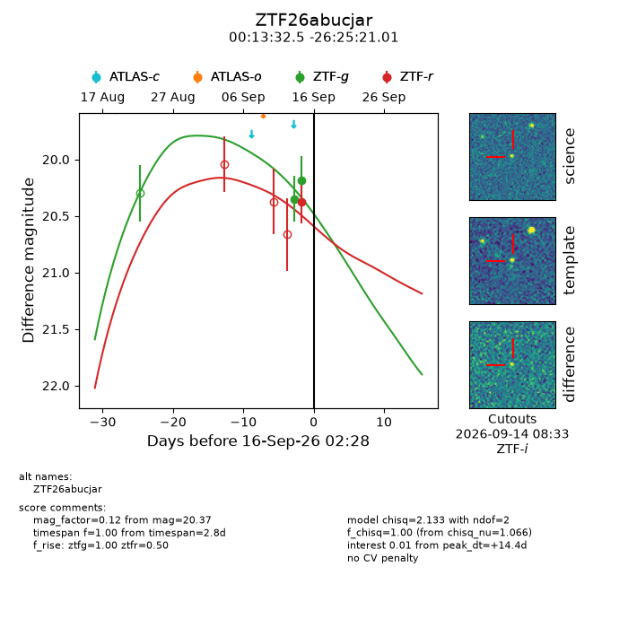
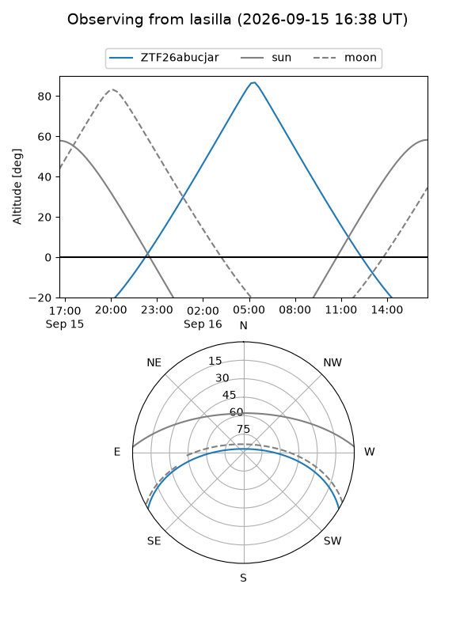
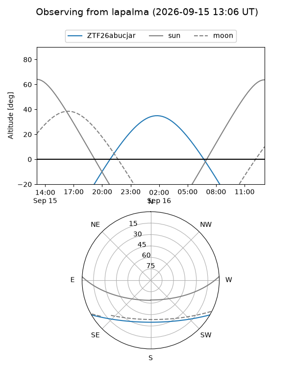
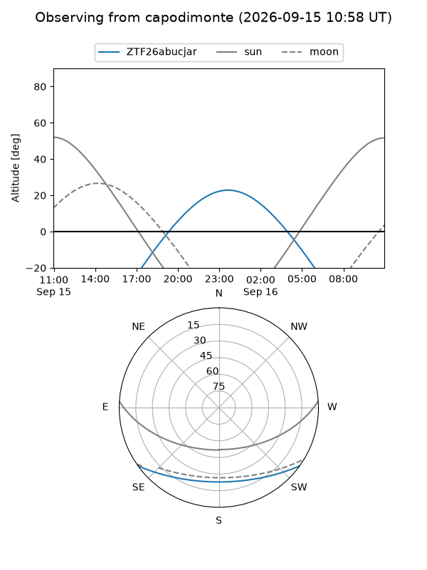
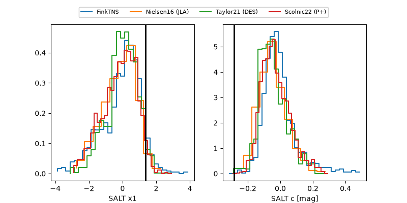

ZTF26abucjar
Target ZTF26abucjar at 2026-09-16 14:25
Aliases and brokers:
FINK-ZTF: ztf.fink-portal.org/ZTF26abucjar
Lasair-ZTF: lasair-ztf.lsst.ac.uk/objects/ZTF26abucjar
ALeRCE-ZTF: alerce.online/object/ZTF26abucjar
Direct TNS query: direct search
alt names
ZTF26abucjar (ztf,fink_ztf)
Coordinates:
equatorial (ra, dec) = 3.3854,-26.42250
equatorial (HMS+DMS) = 00:13:32.50,-26:25:21.01
galactic (l, b) = (35.5528,-81.51441)
Flags:
peak dt: +14.9
Photometry:
last ztfg=20.18, ztfr=20.37
2 ztfg, 1 ztfr detections
Lightcurve

Visibility



Additional plots
